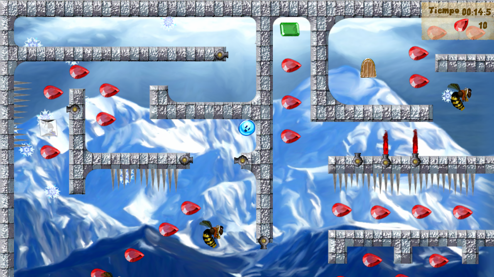
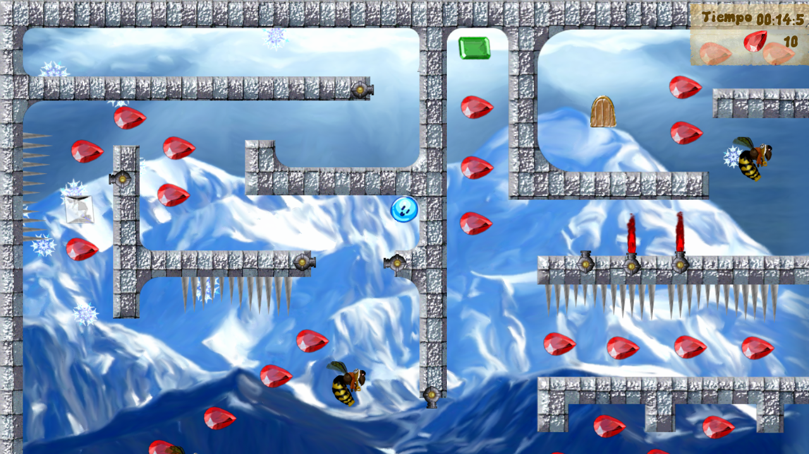
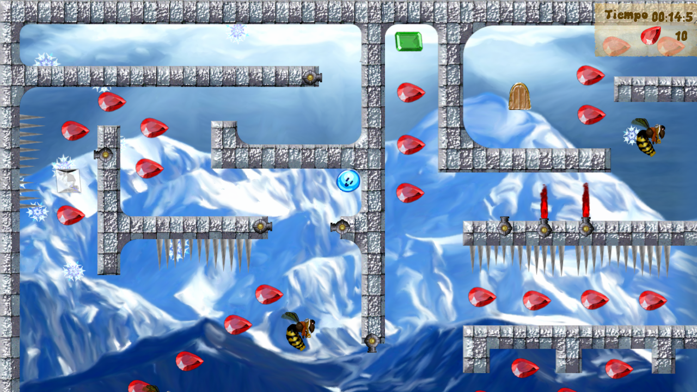
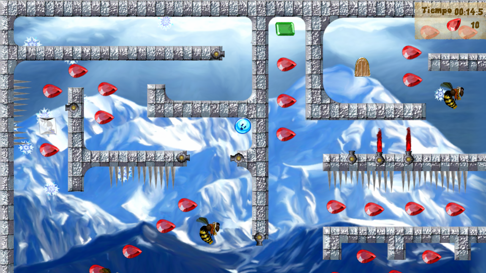

This is the first videogame that I have published in Google Play.
This project was created in Unity3D, using C#. I am the designer and programmer of the whole project.
The assets such as sounds, music and graphics were found online (public domain) and adapted for the project.
This personal project was developed during approximately 4 months. During this time I learnt how to use the engine, designed the levels, some art, and typed the code. The project is able to publish directly to the Facebook account of the user (using the Facebook API), uses the accelerometer to modify the gravity and the touch screen to control the forces.
Technologies:
I am publishing not only the game, but also the source code in a GitHub repository.